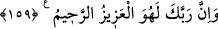

sayhası/haykırmasıdır. Bu da cumartesi günü olmuş, hepsi birden helâk olmuştur.
“Doğrusu bunda,” Semûd kavmine inen bu azabda “büyük bir ders vardır;” teklif
edilen âyetler/mûcizeler ortaya çıktıktan sonra inkâr etmenin, azâbın inmesini
gerektireceğine dair bir delâlet vardır. İşte akıl sahipleri, özellikle Kureyş bundan ibret
alsınlar. Ancak ne Semûd kavminden ve ne de Kureyş’ten çoğu îman etmemiştir.
“Ama çokları” Semûd kavminin veya Kureyş’in çoğu “iman etmezler.” Rivâyete
göre Semûd kavminden sadece dört bin kişi iman etti.
Sâlih (a.s.)’a vahiy büluğ çağından sonra geldi. Hûd (a.s.)’dan yüz sene sonra
peygamber olarak gönderildi. İkiyüzyirmi sene yaşadı. Bundan başka görüş de ileri
sürülmüştür.
159. Şüphesiz Rabbin, işte O, mutlak galip ve engin merhamet sahibidir.
“Şüphesiz Rabbin, işte O, mutlak galip” Aziz; dilediğini yapma konusunda mutlak
galiptir. Nitekim Semûd kavminden yalanlamaları sebebiyle intikam almak istemiş ve
onların kökünü kazımıştır. İşte O’nun emrine muhâlefet edenler sakınsınlar da önceki
yalanlayan ümmetlerin düştükleri hallere düşmesinler. “Ve engin merhamet sahibidir.”
Şefkat sahibidir ki hak eden olmadıkça azab etmez.
Deve Sâlih (a.s.)’ın peygamberliğinin alâmetiydi. Kavmi onu yok edip ona gereken
tâzim ve saygıyı göstermeyince, sonunda pişmanlığın kendilerine fayda vermediği bir
zamanda pişman oldular.
Kur’ân da bizim Peygamberimiz’in (a.s.) peygamberliğinin alâmetidir. Kim onu
reddeder, içinde olanlarla amel etmez ve ona tâzim göstermezse yarın pişman ve nasîbi
de azab olur. İbret almak da onun içinde bulunanlar cümlesindendir. Şu halde akıl ve
basîret el verdiği kadar emre imtisâle sarıl. Kuru sözden sakın. Sen üzerine düşeni yap,
işin hakikatini müşâhede edersin.
Mesnevî’de der ki:
Sözün korunması, söz şahidliğine bağlıdır
Ahdin korunması da iş şahidliğine
Söz şahidi yanlış söz söylerse reddolunur
İş şahidi de eğri büğrü yürürse reddedilir
Hemencecik kabul görmesi için
Sözde ve işte bir çelişki olmamalıdır
Kendi terazin eğri ve hileli olduğu halde
Mükâfat terazisinin doğru olmasını nasıl beklersin?
Sen hainlikte, eksik tartmada sol ayağa dönmüşsün